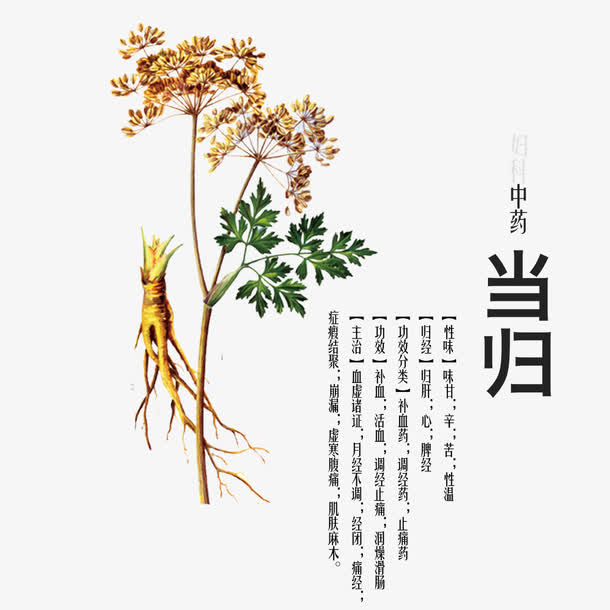

当归
起源:来源于伞形科东当归，又叫大和归、日本当归、延边当归。在东北某些地区作当归药用，吉林朝鲜族当地认为其功效与当归相似。东当归在日本和朝鲜均作当归药用。其根较当归为短，表面黄棕色或棕褐色，全体有细纵皱纹及横向突起的皮孔状疤痕。主根短具细环纹，直径为1.5～3厘米，顶端有叶柄及茎基痕，中央多凹陷，支根较多为10余条或更多。质地坚脆，断面皮部类白色，木部黄白色或黄棕色。气芳香，味甜而后稍苦。

功效:补血活血，调经止痛，润燥滑肠。
市场:当归，又称秦归、西当归、云归等，是中医常用的妇科病圣药，有着2000多年的药用历史，在国内外久负盛名。当归种植热情持续高涨近年来，中国当归种植面积整体呈增长趋势。